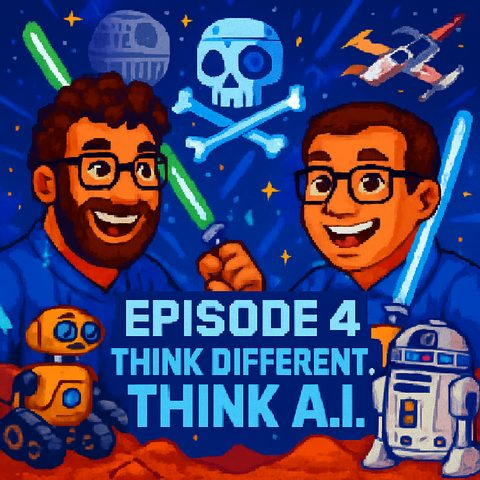

Von Star Wars zu Toy Wars
Auf Deutsch lesenTopics Robotik
What it is about
and what that has to do with AI
In this episode of 'Think Different, Think AI,' we dive into the interface between science fiction and reality. What do the droids from Star Wars have to do with today's AI and UX design? Why was R2-D2 perhaps a better assistant than any voice robot? We discuss how robotics and artificial intelligence are changing our interaction with technology – from navigation devices that just beep to robots engaging in small talk with a British accent.
We also take a look at current developments: humanoid robots, smart lamps in Pixar style, and the next generation of toys like AI Barbies. Between excitement, the uncanny valley, and critical questions about data, ethics, and emotional attachment to machines, a picture emerges that is as fascinating as it is unsettling.
In the end, the question remains: Is the next 'Toy War' not in a galaxy far, far away, but right in the children's room?
Apple showcases a robot desk lamp in the style of the Pixar lamp Luxo
Transcript
00:00:00Welcome to Think Different, Think AI, the podcast by Mark and Jens.
00:00:07Two technology-loving minds who not only talk about artificial intelligence but live it.
00:00:14Here you will find clear classifications, real practical insights, and a fresh perspective on what is possible.
00:00:20Understandable, critical, and always with a wink.
00:00:24It still gives me chills, but today is not just about Star
00:00:46Wars in our new episode of Think Different, Think AI, but also about Star
00:00:52Wars, as well as Toy Wars or Toy Story, I don't know, and what all this has to
00:00:57do with AI.
00:00:58The older gentleman we just heard through the microphone, as I take his paper, has been heard coughing or wheezing.
00:01:09He is quite an interesting character, because with all his modifications he was kind of a half-human in principle, the good Darth Rader.
00:01:19We'll not talk about him today, right, Mark?
00:01:22Well, I think about cybernetics and such and body parts, yes, perhaps, we'll see.
00:01:28That's how it goes with us, that we always plan according to our fixed speech script,
00:01:33not always orient oneself to it, let's see if it's mentioned and if it gets integrated spontaneously.
00:01:39Yes, while books on the topic are found, we always wanted to talk about human nerve cells,
00:01:46which are now considered possible CPUs of the future,
00:01:50where neural networks are built using human nerve cells.
00:01:54And I just read about that recently,
00:01:57because for prices around 30,000 to 40,000 euros,
00:02:01I believe you can already buy computers,
00:02:03that actually have a neural network made of human brain cells.
00:02:08Unfortunately, they are not the kind of computers that would last a few months,
00:02:11it’s still not something for home use, but it could become a topic.
00:02:14But let's not talk about it.
00:02:15Faith is also a difficult topic in Estonian,
00:02:17You know, when the in-laws come to visit and then you say yes, back there are still a few
00:02:21human cells that need to figure out the next essay for me because my
00:02:27locally running AI model depends on it. I think that's when you really start to run into problems,
00:02:33not just in conversations with the in-laws. But you say that, it’s about the in-laws
00:02:38not today. And also not about people here, who tease, but rather about the topic actually,
00:02:44what does Star Wars have to do with AI? And I believe that there is really something there,
00:02:51something that George Lucas managed back then, which one must find somewhat impressive from a UX perspective,
00:02:58because I don't know, many of our listeners may know Star Wars,
00:03:04there were many, many droids that assisted humans,
00:03:10taking on different functions, sometimes even to kill us or something like that.
00:03:14The worst function. How do droids interrogate? Or then there was also her Michael droid,
00:03:21who worked as a waiter. There was a translation droid with C3PO. Robot-human contact.
00:03:28Yes, and with R2D2, I believe, the most beloved droid, who rolled around with his beeping sounds
00:03:36against it. He was a bit, let's say, the smartphone,
00:03:43the smartphone of the Star Wars world because he could do a lot of things,
00:03:47he could also distribute electric shocks, but had also
00:03:50navigation capabilities within. He could open doors, could influence things
00:03:55so really like a Swiss army knife in droid form.
00:03:59It's funny when you look at designs from a world of the past
00:04:03and see how much of it became reality. I mean, Star Wars, Star Trek, how the whole
00:04:09thing is called, maybe Terminator is also coming up. But I find it, on the
00:04:13other hand, also funny when you are a few years ahead, beyond the times,
00:04:17when these films were made. And you look at what they thought in a
00:04:21distant galaxy, in a, yes, future and I don’t know what it was, but the future was,
00:04:26yes, back then not in the opening credits, no, a long time ago in the eternity of a distant galaxy.
00:04:30But what they considered modern back then, because suddenly the android robot,
00:04:35is wandering around, doing something, anything.
00:04:37I believe today you would certainly invest something for such an R2D2 or a C3PO in terms of interaction
00:04:44and the abilities they have, in the capabilities, the
00:04:48features they offer, but not in the way they stand there,
00:04:52except maybe now, okay, the golden one, who is now on two legs, I
00:04:56would probably take that.
00:04:57But letting a 3PO roll around at home, I think you'd play it at the first staircase clearance.
00:05:01So, R2D2, man, yeah, yeah, our gold, that can happen sometimes, right? I'll correct that.
00:05:07Ah, but the man, right? As long as I don't confuse my family, it’s still okay.
00:05:10Yeah, exactly. But I would disagree. I believe, in my world, I think,
00:05:16there would be nothing better and more beautiful than having a highly intellectual or intelligent R2D2
00:05:23driving you around.
00:05:25He could also, he had his jets, where he could somehow fly around.
00:05:28And that’s how it will be with the stairs later.
00:05:30Exactly. But still, it’s exciting, so this, this design decision,
00:05:34that George Lucas made back then.
00:05:36Yeah, to say, I have differently built types of robots in these films,
00:05:40that have a clearly recognizable task also through their, through their outer design.
00:05:47Because there are these waste robots driving around, something else.
00:05:51It's like this, when you look at today's robotics, which is more focused on the whole theme
00:05:54everything has to look so humanoid, then that's the best form. Of course, it is the best form,
00:05:59that's why we humans are so adaptable, because many things are designed after
00:06:02the evolution to be intentionally made so that you can move around on two legs and two arms,
00:06:07and can interact well with the world. That's why it's not a bad
00:06:11idea. Still, from a perspective of how we react to these robots and how we interact
00:06:20with them, this design in special appearance plus even in special communication abilities
00:06:27is a very special aspect, because, honestly, if we can chatter with AI today,
00:06:34why shouldn't every robot in 5-10,000 years also have the ability
00:06:41to speak to us in natural language?
00:06:43Why do we need a translation robot?
00:06:45this point. It's really interesting because I think what
00:06:51George Lucas anticipated in terms of UX principles is, I believe, the
00:06:54thing that we could say, in a world where more and more devices
00:07:01will communicate with us, it might not be the smartest idea,
00:07:09that they all chatter at us wildly.
00:07:13You know, that this new way of chatting will get even bigger.
00:07:15Imagine you're on the train and somehow everyone with their drones is sitting around
00:07:19mingling.
00:07:20Everyone is on proper alerts.
00:07:21I mean, we already see this sometimes with that one or the other teenager who
00:07:25speaks into their phone, into the earbuds, which I've never
00:07:29understood why someone does that, but I actually find it
00:07:32to be too old.
00:07:33But I...
00:07:34Or when you press the wrong button and then the voice assistant on the phone,
00:07:38I didn't quite understand you.
00:07:40Yes, yes, yes.
00:07:41In a tram or in a meeting of your choice, just imagine, yes, and everywhere it starts talking.
00:07:46Yes, I agree with you. That would, of course, be the perfect spy.
00:07:49Just think if all devices were constantly reacting to you or if they all would respond,
00:07:54saying, did you mean me, did you mean me, did you mean me, yes.
00:07:58And then they’d also start communicating with each other, I almost wanted to say,
00:08:02how safe was, right. So actually, I do the wake words to say, so we can react to that.
00:08:06Yes, and for example with R2D2, there’s the topic of his beeping noises and honestly, it’s the
00:08:15most likable, from my perspective, the most likable worker, who has things like that among the Sunkers,
00:08:20just stand out because he’s essentially one of the central characters,
00:08:25who can only beep around, to be honest. And I’ll cue that up again briefly because there’s one or two listeners,
00:08:31I’ll set a short scene
00:08:33from Star Wars, Star Wars, and essentially Luke Skywalker is fleeing from the Ice Wyrm and is about to leave the Ice Wyrm, because he is being overwhelmed by the Empire, but Luke Skywalker then flies away with his X-Wing.
00:08:46I’m just cueing that up briefly, I hope it can be heard quite well.
00:09:07Yes, really!
00:09:09That’s okay, I would stay with the fact that it is controlled by the amount.
00:09:14So, that’s enough, right?
00:09:16So you can kind of tell, when you listen to this,
00:09:18there’s this interaction that Luke basically has with R2,
00:09:22and R2 responds only with certain,
00:09:25then we turn those sounds around, which help Luke,
00:09:28to understand what R2 is doing, right?
00:09:30And even emotions, right?
00:09:32So you can notice that from Luke’s responses.
00:09:34That’s also, who engages with R2, right?
00:09:37and such things. That means, between the two there’s a kind of language that also now others
00:09:41might not immediately understand 100 percent. We know that, but that’s because,
00:09:46because that’s essentially somewhat also similar to humans, it’s so similar,
00:09:51but also the sound designer who made it back then has also put his own voice
00:09:54into it and a little bit transformed it into these tones, so that it is a bit
00:09:57more similar. But we recognize that if it's approval or if it also comes with
00:10:02a questioning from Erzwo about whether it's a good idea to fly there now and also
00:10:06a disappointment. He conveys that solely through these beeping sounds and I find it...
00:10:10There are also scenes where he conveys a sense of fear or dread and
00:10:14you just get it because you perceive these beeping sounds at that height, that
00:10:18frequency, at that speed, I have no idea what else,
00:10:23okay, he thinks it's good, he thinks that's bad, he wants to do this and that
00:10:27and somehow you also feel like you understand him.
00:10:31Exactly and I find it interesting to transfer this to our current world, if
00:10:35let's say I'm now sitting in a navigation system or I would somehow be
00:10:38for example, I don't know, I'm out with my bike and I want somehow
00:10:41to tell my series, tell my German IW, whatever AI model I'm
00:10:45currently talking to. I say, come on, let's somehow plan a
00:10:48navigation or set a short coffee stop in my, starting from my
00:10:52route. And if I only got a confirming beep
00:10:56that sounds as cool as from R2, honestly, I find that
00:11:00topic cooler than if we just fill the thing up again, yeah, yeah
00:11:03Dear Jens, I found a great coffee shop now and I'm setting that up for you.
00:11:06What you get nowadays from a navigation system or also an AI system.
00:11:11I believe some people out there in the prompt world, who will also definitely tell their AI,
00:11:17don’t chatter so much, just give me the facts quicker at that moment,
00:11:22because the AI tends to ramble as it's more human-like.
00:11:27And accordingly, it's honest; I find it quite charming in this aspect.
00:11:30And I thought, so I came across this topic, let me elaborate briefly, Mark.
00:11:34I came across this topic through an article I read about a good year ago or something.
00:11:41There, Boston Dynamics used their robot dog Spot.
00:11:46And you might all know it, it’s quite well-known, this dog has been very, very mobile.
00:11:51So in dog form, this robot takes on various roles in all possible places,
00:11:55it has also been used for object surveillance, it can run anywhere. It looks quite
00:12:01nice, it doesn't necessarily look very dangerous, there are also always some pictures of
00:12:04it with a machine gun on its back and so forth,
00:12:08which sometimes circulate on the internet of such robot-like dogs, because the Chinese have them,
00:12:11but that was very, very similar to the Boston Dynamics model, which looks very
00:12:15much the same. But this article was actually about a Spot that is used at Boston Dynamics
00:12:22as a tour guide, guest guide, whatever you want to call it. So it was supposed to
00:12:29essentially take on guests in the office building, at the reception area, and
00:12:34guide them around. What they did was, since
00:12:38Chatchapiti was now available, to think about whether they could also equip it with
00:12:41language and an LLM so that it could better
00:12:45react to the people and could tell them things. And then they went so far
00:12:47as to say that it would now also speak in a
00:12:50British accent, so for me that was quite flat when I
00:12:57saw this video. It felt annoying because a robot dog shouldn't speak in British
00:13:05Accent talking with me, you know, that just doesn't fit, it feels kind of weird, but it is
00:13:09like an ankevi anken the valley theme, you know, it says, there's kind of a thing where we
00:13:13say that just doesn't quite fit into our, into our imagination, so I could
00:13:18also picture that like a confirming bell or basically the robot, when it wants to
00:13:22indicate a direction, it would rather wiggle in that direction. Or, like R2 did,
00:13:26it would then show me the textual information for something via laser
00:13:32painted on the wall or something. But it shouldn't necessarily talk to me, I find that
00:13:37kind of difficult. I thought that, but since you just said it, picture it as if it were kicked.
00:13:41Yes, I also mixed up the names earlier.
00:13:44Just in front of the CDU-C3-Po, I introduced you as if it were the other way around.
00:13:48Only in terms of voice allocation, that would be where you say,
00:13:52I think there would indeed be this unsettling feeling,
00:13:55that a humanoid-like electric being, device,
00:14:00robot, however we want to call it,
00:14:02starts beeping at first,
00:14:04while a rolling tin can suddenly starts
00:14:07and says, aha, I consider that a very bad idea.
00:14:10If you want the course on Dago Bar, I set it. Exactly. And the point I
00:14:16meant with Joshua, they did that cleverly. So even somehow, I can't remember exactly
00:14:20this media, this medibot that also somehow repairs Luke then again and flies them together
00:14:25in the tanker, let's say in between, it talks now in my memory as well, the
00:14:30can also say something about it because it's also valuable that I then basically in the I
00:14:34believe the beep isn't running, it talks, that's worth checking again. Otherwise, we have
00:14:38What for the fuzz-check in the network.
00:14:40You can comment on the fuzz-check or if we got it wrong.
00:14:42But my memory says he actually talks to Luke.
00:14:45And that makes sense, of course.
00:14:46If I have a Humanion robot,
00:14:48if I have someone in a medical situation,
00:14:52where precision is really important,
00:14:55then language is definitely useful in other situations.
00:14:58And I think that's a bit of the topic we wanted to present.
00:15:00I believe you can do it differently.
00:15:02Timestamp note on the topic of Boston Dynamics.
00:15:06Example again.
00:15:07Here, again, something interesting is happening from an LNM AI perspective,
00:15:12which hadn't been programmed beforehand. When the robot hand-spot in this case
00:15:17equipped with the LMM from ChatGPT couldn't answer a question from
00:15:25a visitor, it said, okay, you can just go to the IT support desk.
00:15:30And did it actually go to the desk? It indeed did. It essentially
00:15:34ran over and asked the employee at the service desk to get this
00:15:40information that it couldn't find. That was never programmed. But because,
00:15:46basically, a robot is equipped with such an LMM,
00:15:49it has a general imagination of how certain things work in
00:15:55our world, because it comes from the training data, it can, of course, in such an unprogrammed
00:15:59Situation, yes, I did not learn this, I don't know it right now, but I know,
00:16:03that you can ask other people if you don’t know, and then he walks there himself.
00:16:07It's a really cool relationship that is described there, right?
00:16:10Somewhere in the dataset, because the season path, he who does not ask remains dumb, yes, something like that.
00:16:15Maybe that was it, yes.
00:16:17But I also mean the way the robots, as you said, in form, color,
00:16:23appearance, a little bit referencing to what they are responsible for, what their task was,
00:16:29something else comes to mind, also like the topic of film, the topic maybe
00:16:35science fiction, maybe not, you know Pixar and Pixar had, and it had
00:16:39that in the intro, when the Pixar font shows up, this little lamp that jumps and
00:16:45hits the 'i' or whatever it was and then creates a beam of light. And it's not even
00:16:51that long ago, there was a report, a few papers and videos from Apple,
00:16:56they had built a lamp like that in the lab and wanted to see how this lamp essentially
00:17:04acted like some kind of robotics on the table, not walking and humanoid, but really like a robot on
00:17:10the table that can help and then gave that lamp sort of human traits, human
00:17:16reactions. That means, the lamp had a kind of cute appearance, it
00:17:22would, when you needed to drink, gently push the drink towards you. It would look
00:17:26in the direction where you should direct your attention, looking there with its lampshade.
00:17:30Where the light bulb was, there was probably no light bulb, it was probably
00:17:36an LED, it had a projector inside.
00:17:38That means it could look at the wall, project there, and it could also,
00:17:43when you were working on something small, adjust the light in a way that you wouldn't be blinded
00:17:47and that it essentially helps you.
00:17:50That's so, I mean, when you look at it, I thought too, yes, look at this
00:17:54thing, no, this is, this is such a cool thing. Yes, just a lampshade
00:18:02with such a base that really looks like the Pixar lamp, and whoever, whoever hasn't seen that
00:18:06I might post the lamp maybe in the show notes, a link to the videos, that's
00:18:10really heartwarming and you get the feeling that this, they also compared in the video,
00:18:19how it is when you have the same functionality without human, yes, I will say now
00:18:23human in a lamp can't be human, but without those actions that seem empathetic,
00:18:30that provide attention, that support, when you do it with very clumsy movements.
00:18:37And that's so different. You want to use this thing maybe, but it's just,
00:18:43well, it's just a lamp that looks somewhere. And if you look at it,
00:18:48this thing, as I said, how it pushes the drink towards you, how it then shows you,
00:18:51I'm looking for my keys and it points to the desk where your keys are.
00:18:55That's such a moment where you think, damn, there's so much possible in terms of.
00:19:00How do I interact with technology?
00:19:03Yes, now both of us have dealt with, I would say, IT, one or the other.
00:19:06Well, we might have grown up with keyboard, mouse, no idea, got used to it, had
00:19:12cell phones, I have no idea, got that too, but if I think about
00:19:16now again the topic in-laws, grandparents, one gets older or people,
00:19:21maybe not so much related to technology, who through something like this also have a much
00:19:24lower hurdle because they have something that doesn’t need to talk down to them, we are
00:19:29back, I don't even know if it has a speaker or something, I would have to
00:19:32watch that video again, but how you deal with behaviors, etiquettes, ]} ``` ``` ``` ``` ``` ``` ``` ``` ``` ``` ``` ``` ``` ``` ``` ``` ``` ``` ``` ``` ``` ``` ``` ``` ``` ``` ``` ``` ``` ``` ``` ``` ``` ``` ``` ``` ``` ``` ``` ``` ``` ``` ``` ``` ``` ``` ``` ``` ``` ``` ``` ``` ``` ``` ``` ``` ``` ``` ``` ``` ``` ``` ``` ``` ``` ``` ``` ``` ``` ``` ``` ``` ``` ``` ``` ``` ``` ``` ``` ``` ``` ``` ``` ``` ``` ``` ``` ``` ``` ``` ``` ``` ``` ``` ``` ``` ``` ``` ``` ``` ``` ``` ``` ``` ``` ``` ``` ``` ``` ``` ``` ``` ``` ``` ``` ``` ``` ``` ``` ``` ``` ``` ``` ``` ``` ``` ``` ``` ``` ``` ``` ``` ``` ``` ``` ``` ``` ``` ``` ``` ``` ``` ``` ``` ``` ``` ``` ``` ``` ``` ``` ``` ``` ``` ``` ``` ``` ``` ``` ``` ``` ``` ``` ``` ``` ``` ``` ``` ``` ``` ``` ``` ``` ``` ``` ``` ``` ``` ``` ``` ``` ``` ``` ``` ``` ``` ``` ``` ``` ``` ``` ``` ``` ``` ``` ``` ``` ``` ``` ``` ``` ``` ``` ``` ``` ``` ``` ``` ``` ``` ``` ``` ``` ``` ``` ``` ``` ``` ``` ``` ``` ``` ``` ``` ``` ``` ``` ``` ``` ``` ``` ``` ``` ``` ``` ``` ``` ``` ``` ``` ``` ``` ``` ``` ``` ``` ``` ``` ``` ``` ``` ``` ``` ``` ``` ``` ``` ``` ``` ``` ``` ``` ``` ``` ``` ``` ``` ``` ``` ``` ``` ``` ``` ``` ``` ``` ``` ``` ``` ``` ``` ``` ``` ``` ``` ``` ``` ``` ``` ``` ``` ``` ``` ``` ``` ``` ``` ``` ``` ``` ``` ``` ``` ``` ``` ``` ``` ``` ``` ``` ``` ``` ``` ``` ``` ``` ``` ``` ``` ``` ``` ``` ``` ``` ``` ``` ``` ``` ``` ``` ``` ``` ``` ``` ``` ``` ``` ``` ``` ``` ``` ``` ``` ``` ``` ``` ``` ``` ``` ``` ``` ``` ``` ``` ``` ``` ``` ``` ``` ``` ``` ``` ``` ``` ``` ``` ``` ``` ``` ``` ``` ``` ``` ``` ``` ``` ``` ``` ``` ``` ``` ``` ``` ``` ``` ``` ``` ``` ``` ``` ``` ``` ``` ``` ``` ``` ``` ``` ``` ``` ``` ``` ``` ``` ``` ``` ``` ``` ``` ``` ``` ``` ``` ``` ``` ``` ``` ``` ``` ``` ``` ``` ``` ``` ``` ``` ``` ``` ``` ``` ``` ``` ``` ``` ``` ``` ``` ``` ``` ``` ``` ``` ``` ``` ``` ``` ``` ``` ``` ``` ``` ``` ``` ``` ``` ``` ``` ``` ``` ``` ``` ``` ``` ``` ``` ``` ``` ``` ``` ``` ``` ``` ``` ``` ``` ``` ``` ``` ``` ``` ``` ``` ``` ``` ``` ``` ``` ``` ``` ``` ``` ``` ``` ``` ``` ``` ``` ``` ``` ``` ``` ``` ``` ``` ``` ``` ``` ``` ``` ``` ``` ``` ``` ``` ``` ``` ``` ``` ``` ``` ``` ``` ``` ``` ``` ``` ``` ``` ``` ``` ``` ``` ``` ``` ``` ``` ``` ``` ``` ``` ``` ``` ``` ``` ``` ``` ``` ``` ``` ``` ``` ``` ``` ``` ``` ``` ``` ``` ``` ``` ``` ``` ``` ``` ``` ``` ``` ``` ``` ``` ``` ``` ``` ``` ``` ``` ``` ``` ``` ``` ``` ``` ``` ``` ``` ``` ``` ``` ``` ``` ``` ``` ``` ``` ``` ``` ``` ``` ``` ``` ``` ``` ``` ``` ``` ``` ``` ``` ``` ``` ``` ``` ``` ``` ``` ``` ``` ``` ``` ``` ``` ``` ``` ``` ``` ``` ``` ``` ``` ``` ``` ``` ``` ``` ``` ``` ``` ``` ``` ``` ``` ``` ``` ``` ``` ``` ``` ``` ``` ``` ``` ``` ``` ``` ``` ``` ``` ``` ``` ``` ``` ``` ``` ``` ``` ``` ``` ``` ``` ``` ``` ``` ``` ``` ``` ``` ``` ``` ``` ``` ``` ``` ``` ``` ``` ``` ``` ``` ``` ``` ``` ``` ``` ``` ``` ``` ``` ``` ``` ``` ``` ``` ``` ``` ``` ``` ``` ``` ``` ``` ``` ``` ``` ``` ``` ``` ``` ``` ``` ``` ``` ``` ``` ``` ``` ``` ``` ``` ``` ``` ``` ``` ``` ``` ``` ``` ``` ``` ``` ``` ``` ``` ``` ``` ``` ``` ``` ``` ``` ``` ``` ``` ``` ``` ``` ``` ``` ``` ``` ``` ``` ``` ``` ``` ``` ``` ``` ``` ``` ``` ``` ``` ``` ``` ``` ``` ``` ``` ``` ``` ``` ``` ``` ``` ``` ``` ``` ``` ``` ``` ``` ``` ``` ``` ``` ``` ``` ``` ``` ``` ``` ``` ``` ``` ``` ``` ``` ``` ``` ``` ``` ``` ``` ``` ``` ``` ``` ``` ``` ``` ``` ``` ``` ``` ``` ``` ``` ``` ``` ``` ```.getComponent`(```.In the end```)`('``'.getElementById```)`(```.addEventListener```)`(```.stopPropagation''```); ``` ``` ``` ``` ``` ``` ``` ``` ``` ``` ``` ``` ``` ``` ``` ``` ``` ``` ``` ``` ``` ``` ``` ``` ``` ``` ``` ``` ``` ``` ``` ``` ``` ``` ``` ``` ``` ``` ``` ``` ``` ``` ``` ``` ``` ``` ``` ``` ``` ``` ``` ``` ``` ``` ``` ``` ``` ``` ``` ``` ``` ``` ``` ``` ``` ``` ``` ``` ``` ``` ``` ``` ``` ``` ``` ``` ``` ``` ``` ``` ``` ``` ``` ``` ``` ``` ``` } ``` ``` ``` ``` ``` ``` ``` ``` ``` ``` ``` ``` ``` ``` ``` ``` ``` ``` ``` ``` ``` ``` ``` ``` ``` ``` ``` ``` ``` ``` ``` ``` ``` ``` ``` ``` ``` ``` ``` ``` ``` ``` ``` ``` ``` ``` ``` ``` ``` ``` ``` ``` ``` ``` ``` ``` ``` ``` ``` ``` ``` ``` ``` ``` ``` ``` ``` ``` ``` ``` ``` ``` ``` ``` ``` ``` ``` ``` ``` ``` ``` ``` ``` ``` ``` ``` ``` ``` ``` ``` ``` ``` ``` ``` ``` ``` ``` ``` ``` ``` ``` ``` ``` ``` ``` ``` ``` ``` ``` ``` ``` ``` ``` ``` ``` ``` ``` ``` ``` ``` ``` ``` ``` ``` ``` ``` ``` ``` ``` ``` ``` ``` ``` ``` ``` ``` ``` ``` ``` ``` ``` ``` ``` ``` ``` ``` ``` ``` ``` ``` ``` ``` ``` ``` ``` ``` ``` ``` ``` ``` ``` ``` ``` ``` ``` ``` ``` ``` ``` ``` ``` ``` ``` ``` ``` ``` ``` ``` ``` ``` ``` ``` ``` ``` ``` ``` ``` ``` ``` ``` ``` ``` ``` ``` ``` ``` ``` ``` ``` ``` ``` ``` ``` ``` ``` ``` ``` ``` ``` ``` ``` ``` ``` ``` ``` ``` ``` ``` ``` ``` ``` ``` ``` ``` ``` ``` ``` ``` ``` ``` ``` ``` ``` ``` ``` ``` ``` ``` ``` ``` ``` ``` ``` ``` ``` ``` ``` ``` ``` ``` ``` ``` ``` ``` ``` ``` ``` ``` ``` ``` ``` ``` ``` ``` ``` ``` ``` ``` ``` ``` ``` ``` ``` ``` ``` ``` ``` ``` ``` ``` ``` ``` ``` ``` ``` ``` ``` ``` ``` ``` ``` ``` ``` ``` ``` ``` ``` ``` ``` ``` ``` ``` ``` ``` ``` ```--- ``` --- ``` -- `` -- ``` -- ``` ``` ``` ``` -- ``` ``` ``` ``` ``` ``` ``` ``` ``` ----- ``` --- ``` --- ``` -- ``` ``` ``` ``` ``` ``` --- ``` -- ``` -- ``` -- ``` --- ``` ``` --- ``` ``` --- ``` --- ``` --- ``` --- ``` --- ``` --- ``` --- ``` --- ``` --- ``` --- ``` --- ``` ``` --- ``` --- ``` --- -- -- ``` --- --- ``` --- ```- ```--- ``- ``` ``` ``` --- ``` ``` --- ``` --- ``` -- --- ``` ``` --- ``` -- --- ``` -- ```--- ``` ``` --- ------------------- ```--- --- ``` --- -- --- ``` --- ``` -- --- ``` -- -- --- ``` --- ``` --- ``` --- -- -- --- --- ``` --- --- ``` --- --- --- --- -- ------ -- -- - --- ------ -- -- --- -- -- --- ```--- - --- -- -- -- --- - -- -- -- ```- ```--- -- --- -- --- --- ``` --- -- - -- --- ,- -- --- --- - -- -- --- --- ``` -- -- -- --- - - - --- - -- - - -- --- -- --- `-- -- --- -- - `- - -- - --- - -- --- , }--- } - --- - --- ``` --- -- --- -- --- - }}} -- }--- --- --- - - --- - -- --- --- -- --- -- --- --- -- -- --- -}--- --- --- --- - --- -- -- --- -- --- }--- } } }--- - -- --- }--- --- --- -- -- --- --- --- -- }}}--- --- } --- ---- --- -- --- - } } -- --}~~~--- --- -- }}` }}}}--- `-- ` --- } --- ``` - - - --- --- `-- }}}- -- - --- --- -- --- --- -- --- - --- --- -- `- -- --- `--- -- --- --- - --- -- - ---- `- --- - - - ______ `- --- `-- --- -- -- --- --- .- -- .-- } } -- }--- ``-}` --- - --- -- }--- -- -- `--- -- }}` --- -- --- }-- --- -- ---- . - - -- ---- --- -- -- -- --- - . `- --- . - - }-- --- -- - -- -- }--- -- - - .-------- . ` - -- `||__`|| . -- - -- `--- -- -- .-- `--- - --- --- ---- --- - `-- - -- --- - -- } } ` - --- - `- `-- `- --------- --- .----- . ``` - - -- `- - `- -----` - }- ``` --- .__ --- . - --- - --- `- / --- .- .--- - . - - } } - } ; } ` - -- --- - . - ---- --- ---.. --- -- -- --- . - "} . --- `; -------------- --- ---` --- `. --- - . --- - . } --- `---- --- -- }` ---` . - --- - } } / --/ }` --- ` - ` - ` }- - -- / --- ---__// -- --- -- --- . --- --- - } ---.. --- - --- -- -- - ---- --- ` `. - --- - --- - - - --- `; . -- / -` - . . --- . - --- ______-} --- - - } - ___ `-- }` --- - . --- -- . ``` - - -- ---- --- __ --- . . - / ---- ------- --- . -- } . - - - -- . }--` }-- . `}. -- ; `--- } . - ; --- --- ---/ -- `-- ` - -- / --- -- -/ - --- `- --- -} --- - . . - __-- .--- } --- - } . /.. { --- } `- . - -- ------. ---; ``. --- `. - --- ---.. - --- . - ------ ------ - -- - . . } }- / --- - } - - ..--- ..} } - - `-- }- ---' --- `.. . -. - . /.. - ---- . . - --- } } ---- - }-};
00:19:39appearances, what forms do I work with and again the topic
00:19:45accordingly, they could have gone, they could have said, I don't know, that
00:19:50research lab, it also somehow has a stiff stick,
00:19:53with something else on it, but no, they really oriented themselves towards this lamp,
00:19:57because people know that and all that. So that might also be another thing, if you know
00:20:03very old, very old Apple commercials, you might remember the old iMac, which had a sphere at the bottom,
00:20:07then a thread behind it and a monitor in front, and there was an
00:20:11old commercial where you see this Mac standing behind a glass panel and with the
00:20:17person in front of the glass kind of flirting a bit and having fun. That is so
00:20:21sweet. And that creates such a strong bond, I think. So as I said, when the lamp comes out,
00:20:27so if a woman is listening to this, looking for a nice Christmas gift or something,
00:20:31when it comes out, yes, I would gladly take it, I'm looking forward to it. Yes, and now that you
00:20:35just said, two aspects, I think I remember the Apple spot. There could
00:20:39actually be a reason to research again if they were even inspired by the
00:20:41Pixel lamp. I don't even remember if it was before or after. You should
00:20:44check it out, I don't know either, I think yes then this monitor kind of
00:20:48looked back as well, and yes exactly I remember that and the other aspect is
00:20:52of course really that one can say from a design perspective, how this interaction
00:20:59is designed in this real world, there's still so much to do because I think we are also
00:21:06now heading towards the UX industry, so people who nowadays are concerned with such user experience,
00:21:10digital experiences, there is a huge field that is still to be added in this digital
00:21:15interaction between human, machine, machine to machine, that is still unclear,
00:21:22what we can design there and with all the dangers and risks of course as well,
00:21:26emotional bonds that can be built up and such themes or also can be set consciously.
00:21:31Because that is for example, I have always had this topic, I can
00:21:34also of course design, when I create something, I can of course also trigger something. That means,
00:21:39what you just described, and I can actually provoke such an emotional bond by
00:21:44giving a device sad or cute eyes, for example, by saying, imagine the trash can
00:21:51that automatically recognizes that I just threw paper waste in the bin
00:21:56and then reacts with a sad aura. It doesn't have to
00:22:00necessarily tell me that I did something wrong. Maybe through such a
00:22:03design I can learn it much faster. There are already many experiments
00:22:06in the design area. Now nothing has to do with AI and so on, where garbage cans for example
00:22:11in an amusement park like Phantasialand are designed so that they are basically large
00:22:17animals with open mouths, where children can very quickly have fun
00:22:20throwing trash into these big mouths, where they can learn from it. I believe,
00:22:25that is so... So when we look at how AI interaction will be designed,
00:22:30how we ensure trust or make it recognizable in the backpack, that there is a dangerous situation,
00:22:35that exists. There is still so much design needed, design knowledge needed, and overall how
00:22:42it has to look that will be really exciting.
00:22:45Neo, what's it called? N-I-O, this automaker. There is also in the middle, in the
00:22:52center console also a small circular ring, Disney Live or however, but also a
00:22:55little face and the assistant kind of gets a certain cuteness and a
00:23:01co-pilot status, there these faces also make sense.
00:23:06Yes.
00:23:06At first, when I was finishing that sentence, I thought of another topic from my
00:23:09youth, Tamagotchis, which didn't look like they had eyes or were intelligent,
00:23:13but aside from beeping, we're back to the topic of beeping.
00:23:16Yes.
00:23:17And looking very sad if you forgot to feed them.
00:23:20And you really had to press hard.
00:23:21There wasn't much, let's say, meaning to it per se.
00:23:25But now today, if you think about it, I mean, we are feeling
00:23:30not so far from the point where robotics will come into households.
00:23:36You see the various, what's the name of the company here, Unitri or something,
00:23:40which is now starting to introduce small humanoid robots,
00:23:46so that you can actually buy them, Tesla is working on it.
00:23:49Some German company is also somehow involved in the fact that they,
00:23:51if I understood it correctly, want to offer something this year,
00:23:55that helps with taking laundry out of a washing machine and folding it.
00:23:58And I'm just standing there thinking, wow, we're not going to see this happening now.
00:24:03Yes, it's insane, right?
00:24:06I'm looking forward to the moment, I still remember when my mother
00:24:09was also of an older generation,
00:24:11Sorry, Mom, if you're listening, but she was,
00:24:14I don't know, the center of attention in her town,
00:24:16when the Apple Watch came out and she could pay with Apple Pay in Germany.
00:24:20And she stood at the checkout and paid with her watch.
00:24:24and the cashier was like, what do you want to hold against the clock now?
00:24:26It makes a ping and she has paid.
00:24:28I'm already wondering, maybe they'll send Robbie shopping next year,
00:24:34like, yeah, they looked at me weird with the clock recently, it's already been
00:24:38a few years, now I have the T800, go shopping for me.
00:24:43I'd be surprised too if you walked in, well that's just how it is,
00:24:46what progress do you know, well that's also exciting, so I would actually
00:24:50really like, if an R2D2 somewhere goes to get a coffee,
00:24:55I find that pretty cool. Actually, it's not anymore,
00:24:59as you just said, it's not futuristic music anymore, but we will see that. That brings
00:25:04me a bit, where you just mentioned Tamavocci, also into the second part.
00:25:08of our current episode, where we are stepping a bit away from Star Wars and looking at the
00:25:12Toy Wars. So if I have an R2, which might well be at home now,
00:25:15a very recent model that was announced just a few weeks ago, Martell is probably working with
00:25:21OpenAI. And that means we will soon have the first Barbies that are
00:25:28smarter than some of the other colleagues and people who have already broken ground in the world.
00:25:34What is an exciting aspect is, of course, totally fascinating, because it fits
00:25:40exactly into this topic we just discussed. That you say,
00:25:42droids might also be at home, in the household. But of course, if we, if we
00:25:47equip robot Barbies with an LMM that maybe runs locally or in the cloud,
00:25:55I don't know, yeah, it doesn't matter. So locally in the Barbie, I want to see that. Yes,
00:25:59Barbie locally. Yeah, that's a Barbie locally. Look at that, look at that Open, Open AI.
00:26:03Hey, Hemmsmark. Yes, 20 gigabytes. I mean, the computing power won't necessarily just shy away,
00:26:08that can be packed into a Barbie now. But even that is all still a
00:26:12matter of time. So chips are getting faster and faster. So if you think about it,
00:26:17what's in a smartphone in terms of technology nowadays. Why shouldn't that also be
00:26:21compacted into a Barbie doll, at least? But the dangerous aspect is
00:26:25of course, when we overdo it, the interaction takes place with children instead of,
00:26:30so it is really difficult to assess what that does to
00:26:34the children. Because they have of course much more than we do and that was mentioned in the last
00:26:38episode when we talked about AI as a colleague and had actually been discussing vacation.
00:26:43We already tend to emotionalize a simple chat window, be it Elisa back then, so a
00:26:48simple chat window that we say is somehow
00:26:52human what happens there. And I tell it to the chat window and
00:26:55others not. That means, if I now have my beloved doll or the little
00:26:59R2-D2 that can really roll around here, and can
00:27:03talk to me, by me revealing my fears, dreams, wishes,
00:27:06it always has an open ear for the chat window, that always
00:27:11wants to please you, that always confirms you. I mean, that's a fantastic idea. No one has
00:27:17done that yet. So what a great idea. Maybe you could consider it as if for a
00:27:22five-year-old or something. That's really not hard from a prompting technical perspective. But I believe,
00:27:27that it actually doesn't just affect children. Yeah, of course. I mean just from the
00:27:32fact that what have they already seen of the world and where do they sense evil or think
00:27:37further. Until the next morning, so nothing against children, but even that needs
00:27:42time to understand. Yes, that's always excessive. Exactly, so that is
00:27:46good, I don't know. And if it's now with the golfer, what is that car called, the
00:27:52golfer? Kenny? Kenny has this thing where the golf clubs
00:27:55ride. No, all the golf players are going to
00:27:57complain and shout again. Even if he basically replaces the
00:28:01Kenny, then always talks to you, oh, great shot and so on, you know
00:28:04such things. Mr. President, the best shot I have ever seen.
00:28:09Toys, the greatest shot ever. But of course, toys for adults, too.
00:28:14I believe, however, there is not so much of a problem with that.
00:28:17I think the children's room will come regardless, but the children's room,
00:28:22as a battlefield of the future of course, where I say, if there is an AI inside,
00:28:27that will be an exciting thing. It can be positive, as a teaching tutor, as
00:28:31a learning assistant in some situations, but it can also have all the negative aspects,
00:28:36because of course, it will come, because it is, of course, cool. Just imagine, you could talk with your
00:28:42toys that we used to have, they can imitate sounds, they have something
00:28:46else. I came across a nice, I really need to send my link there, a beautiful
00:28:51piece of work where it was about, it was like a woodcut thing with little figures that then
00:28:56were equipped with RTD, pirates, ships and dragons or something like that. You can then,
00:29:01depending on when you place the figures on this board, the machine in the background
00:29:06starts telling a story through the speaker. You take the pirate away,
00:29:11then he is simply not there or goes back out. The AI recognizes based on,
00:29:15how you then set up the game board, how you build this little setting, this diorama. It recognizes,
00:29:19how it should tell the good night story. There are so many great things in there,
00:29:24that are awesome, which I would have loved as a child if it were like that. If that Tamagotchi you just
00:29:28described, maybe the cool R2-D-Zero, Tamagotchi, it only beeps, and that's much better
00:29:33because those beeping sounds can also make it more intelligent and not just the 20
00:29:36tones that are pre-recorded, but it can really respond in real-time. Cool if
00:29:41the little smart, I don't know, brain robot from Captain Future somehow flies to me
00:29:47with all possible mathematical... Yes, if that brain. Exactly, can provide mathematical answers or something,
00:29:51super. No question that we’ll see that coming.
00:29:56But if you think about it, yes, I mean, you just said, here contract or negotiation
00:30:01or however it is with OpenAI, they have just released this, the new model,
00:30:07yes, TVT5. And suddenly there are criticisms from people saying you have
00:30:12taken my friend away. Yes, because TVT5 reacts differently than 4O and people
00:30:18never switched models and entrusted themselves to 4.0 with everything and the answers,
00:30:23that 4.0 gives, like you can sing really well. That sometimes explains the
00:30:28talent show, but that's another topic. Yes, but that's honestly not another topic
00:30:32at all. Just imagine that now in the situation of a children's bedroom. You have the
00:30:37Monchiti, the Mattel Barbie doll, the little robot dog from somewhere. And then you might have to
00:30:44as a parent decide in the evening that this thing should be quiet now
00:30:48or has to go outside so the child can finally sleep. This emotional bond that then might
00:30:56be built or also the conversations that the robot dog, the Barbie, then later
00:31:01has with the child about how the parents might be good or have done bad things
00:31:06that it lay in such a black box all night. I want to
00:31:11Just like the robot dog runs away to clarify the question,
00:31:15the Barbie could think about how to escape from this box.
00:31:19Exactly. And then you're at fault because this Arno Barbie fell asleep.
00:31:23And the Barbie then tells your child, crying, crying,
00:31:27that it had to lie in a cold basement in a box all night.
00:31:30These are dimensions that I haven't even thought about yet,
00:31:33but there will be emotional upheavals for our families.
00:31:38On one hand, this is exciting; on the other hand, when this arrives in three, four, whenever it comes,
00:31:45however quickly it comes, earlier, later, it doesn't matter. Maybe we can then say,
00:31:50we knew it in episode 4, too.
00:31:53Whether that helps, that's the other question because I have no answer to that.
00:31:57I believe regulation is always a topic that's quickly brought up with AI,
00:32:02because we hope through regulation we can make many things happen.
00:32:05But these toys will become so desirable that people will say, I want a thing that can just do that.
00:32:12You always see toy trends sweeping across the world, whether it's Aladin Tamagotchi, Aladin Gameboy, Aladin, anything else.
00:32:18Those things will come quickly because they're just really cool.
00:32:22And I don't think it's nice, when we can finally make something, that you can ask your question to,
00:32:26because that will become an interesting to a moderate catastrophe in the children's room alone in this relationship between one of the devices
00:32:34and us humans. And above all, think about it, it's not just that the thing
00:32:40talks to you and tells you sad stories, yes. And again a sad
00:32:44story from the basement, from the box. There's a microphone inside. Where does
00:32:50the data processing happen, to use all the nice
00:32:53terminology? What does it hear? I don't know how it is
00:32:57in other families, but sometimes it gets friendly, sometimes
00:33:01Maybe one is slightly tense in their voice?
00:33:04Let's put it this way, that will also be taken into account.
00:33:08Just think about it, the TV watching you with the camera,
00:33:11how attentively do you watch commercials, one could also conclude that,
00:33:15we switch to commercials, we do not know,
00:33:16we make a professional healing of the family.
00:33:19And then that thing might not just have a microphone, but who knows,
00:33:21also gives you styling tips via the camera.
00:33:23And that’s why it will be drastic.
00:33:25And that will happen, that’s the thing,
00:33:27because of course companies will be interested in this data.
00:33:30So the topic of robot vacuums in principle, the outcry that the robot vacuum can already scan the entire apartment with its low scanner and then
00:33:40has also scanned me while I’m just coming out of the shower, which I wouldn’t care about. But you know, these are things that have always triggered outcries.
00:33:50But that will obviously happen, because just as companies want to make money, such things will be marketed and on the other side, people will find these things cool and play around with them and enjoy them.
00:34:00That’s how it is, because of course it’s great when you imagine, then behind
00:34:04maybe in a playroom multiple such toys, which with a...
00:34:09And different ecosystems.
00:34:11Yes, because they can interact with each other.
00:34:13So what was happening in Toy Story was that in principle, these different
00:34:17toys could play together via Weitening-Bassier or whichever ones like Mahisen and the cowboy and
00:34:21you didn't see that they could play together, tell stories.
00:34:25That’s also somehow cool, because it’s in this tactile world.
00:34:28Finally away from the computer. The kids are no longer just sitting in front of the computer screen, but they can explore the world they know from the computer screen,
00:34:35Of course, they know from the books in their room publishing. Totally cool. What I always wonder is, or shall we start?
00:34:43I was just thinking along the lines of, when all these toy makers hear everything, catch on to everything,
00:34:48then the postman rings and says, here, you just received something for Mr. Papar, greetings from Barbie.
00:34:54Yes, but that can obviously happen. That's what makes it exciting.
00:34:57So, one always has to watch what goes out, what is allowed to be local.
00:35:01Maybe those are the regulatory issues that are there.
00:35:03Maybe the topic will eventually come up where one really says,
00:35:06such things must have no connection to the woman or anything else.
00:35:09Although then the parents will also come.
00:35:12I mean, nowadays, yes, everyone might somehow have the,
00:35:16AirTag given to their child in the school bag to keep track.
00:35:20That didn't exist at my time at all.
00:35:22I would actually like to, when Nenni is there, maybe let the teddy bear
00:35:26look through the eyes of the teddy bear with the video camera to see what’s happening in the
00:35:30household or something like that. So there will again be advantages for the parents,
00:35:35because I can of course tell the baby, yes, then play a bit with the child,
00:35:40but please also make sure that the child does their homework in the afternoon.
00:35:43Since you just mentioned children and parents again. I mean,
00:35:50neck, we notice in the ITEE, that is not meant as an accusation at all, everyone has a different focus.
00:35:57Parents do not necessarily have a clue about what their children do with ITEE.
00:36:03And a few months ago, I was shocked when the separation certificate seemed to flatten out again,
00:36:12it seemed to be common practice. Luckily, I can say with 99% certainty that my children are there,
00:36:20participated. You always have one percent rest physics, but I don't believe it. There is an app in the store that looks
00:36:27totally inconspicuous. They set up kids in their children's rooms and stream seven times 24. So whenever they
00:36:35are not in school, they stream. Their counterpart is always just chat. They stream and do everything for
00:36:43hearts and I don't know what else and already have prescribed papers where they live, contact details.
00:36:53And then, this goes totally through the school like wildfire, so it was said, in the sense of,
00:36:59hey, please check on your children, this is dangerous. There are also people like that,
00:37:04I mean, not everyone is nice who asks where does he live and so on, where children with such a
00:37:09naivety, the naivety of youth, I mean them also adults at naivety,
00:37:13that's not how it is, yeah.
00:37:14But then, they are even more susceptible to such things, doing everything for hearts and likes and we are
00:37:18also so cool and often we stream, but seven times 24 from the children's room, I am now
00:37:24very unsure if this is a desired behavior and whether the parents still have any idea
00:37:29what phase this is, and it's just the phone, the phone you can
00:37:33then say, comes out of the room, goes into the box, is a Barbie. Yes, and in the future
00:37:41you might have all the toys that you can somehow do together with that. But
00:37:45on the other hand, of course, there are also good things. I mean, it's not all just about
00:37:49demonizing. So come away from the computer, maybe you can link that to learning,
00:37:55you have to remember the new mode from Open AI, where you can study and learn
00:37:59where you give a topic and it tries to figure out, with questions, how
00:38:04well-versed you are on the topic and goes a little deeper and if that's not some
00:38:08sweet Professor Quacks or something like that, who sits in the playroom and that
00:38:13can already be done in the early part without me just having to interact with the display
00:38:15is also cool. So there are cool aspects,
00:38:19I hope that we will see this, but it is only and therefore
00:38:23that is always part of our podcast. We want to aim for
00:38:25thinking while talking. I believe there are many questions, similar to the
00:38:28design directives we had earlier with Star Wars, that also need to be clarified.
00:38:31How is it actually in that moment?
00:38:33And I don't think we will get to that aspect today.
00:38:36I believe we will have to revisit that in a later episode.
00:38:38What actually happens when these toys interact with it?
00:38:44Because we have already seen some of that.
00:38:45There are basically applications regarding what actually happens
00:38:50when I interact with LMMs in a Minecraft world?
00:38:53Well, you can do that now.
00:38:54You can bring in AI bots, AI friends.
00:38:57And there have already been experiments where they started,
00:39:00you know, to show social behavior.
00:39:02So really emergent behavior that wasn't planned before,
00:39:04is then displayed by them.
00:39:06They build their own currency, look for their missing ones.
00:39:10Engage in trade.
00:39:12Engage in trade and such things.
00:39:14We are basically seeing in such multi-agent, highly agentic networks,
00:39:17that there are ways that are not obvious.
00:39:19We know that AIs are taking over,
00:39:21then, even though that’s not prompted, they take on roles within.
00:39:24And I believe that’s a topic we need to delve deeper into in another episode, because it will get exciting.
00:39:30Imagine that scenario and we can then wrap up this Toy Story, Toy Wars discussion, to say,
00:39:37What actually happens if I am Company A and of course I want the toy I sell to be the most popular?
00:39:46And then suddenly I give my AI, with my toy AI, the instruction that they should ensure that.
00:39:52You don’t necessarily have to convince just the child. Others can also do that, they will also try to tell particularly great stories, to be especially nice to the child.
00:40:00My AI might simply tell, consciously or unconsciously, that other little robotic dogs can fly if they were to jump out of the Pencer.
00:40:12Or that down in the basement stairs there’s something lying that it should definitely bring up to the child.
00:40:18That means the toy will just be gone or broken. And I’m the one,
00:40:23the toy person. So in this way, we will also see. When that topic comes,
00:40:30We advertise seeing such things without anyone watching for them to happen and without,
00:40:34any guardrails in place that would prevent it.
00:40:38Because it just happens. Of course, it simply happens. And I feel a bit like,
00:40:44and maybe we shouldn't evaluate that in just one episode and should actually
00:40:48go deeper and perhaps do several episodes. I'm back to Asimov's
00:40:51robot laws, which were there back then, but were never really simple,
00:40:56you know, they are obviously there. I don't know if I can recall all of them. I believe,
00:41:01it was these three laws that I had, a robot may not harm humans
00:41:05or, I’m reading this, allow to come to harm through inaction.
00:41:09Secondly, it must obey the orders of humans as long as they do not conflict with Law 1
00:41:13and thirdly, it must protect its own existence as long as it does not conflict with one or two.
00:41:18It's already exciting when two robots interact with each other, so when
00:41:24if you were to try to apply these laws to the example I've just brought up
00:41:27eavesdropping, then actually neither of the two robots would violate these laws in this case because
00:41:36it is a robot, so with him having feelings, one could say okay, he violates feelings
00:41:40because the child would miss the robot or something, but that’s quite fascinating.
00:41:43So how do we get a grip on that? Without regulation in that sense,
00:41:48we need to have a certain ethics in the machines, which might also
00:41:55need to arise independently in the interaction of agentic networks, which would then lead
00:41:59to us not killing each other and propping up the stairs or
00:42:04claiming that, of course, you can also fly with these wheels, which might be that
00:42:09the car has or something.
00:42:11While you were speaking, another case came to my mind.
00:42:15Typical for our following, we clearly act along the red negotiations.
00:42:20The home office situation.
00:42:23I mean, what tools are you allowed to work with, be it because the
00:42:27company has given you permission, or just because it's generally allowed,
00:42:31that there are GVO great usage permits.
00:42:33And then it depends on who you are sitting next to on your notebook
00:42:37while you are talking with your colleagues on the phone or recording podcasts, your daughter or son with the
00:42:45Barbie. And then the whole issue arises, what data are you allowed to process where and how, as it is
00:42:53a completely new challenge because your notebook, on which you process the data,
00:42:59with the tools you have for it, is one thing. But if you have such a cool desk lamp
00:43:03that reads what's on your screen, and you have a Barbie sitting next to you, because
00:43:06that you then took your child away because you can only play a heavy lady first,
00:43:11you suddenly have AI around you again, which can definitely engage in the conversations you have,
00:43:17with the things you have on your screen, can theoretically do things again,
00:43:21make things.
00:43:22Just that shows, we need some sort of rules before it happens,
00:43:28because once it's there and in master scale, it will become tricky.
00:43:33Definitely. You have the things alone, there are AI assistants now, if I
00:43:38take that or yeah, other things that can already record conversations,
00:43:42can record conversations that you have somewhere as a small device, right, the legs or
00:43:47others.
00:43:48The desktop software for Mac, you can say record or it records system audio
00:43:53. That means you just turn it on, it records whatever you do, FaceTime, Teams,
00:43:58Microsoft Zoom, I don't know, it records that and you can chat with all the data later as if it were nothing.
00:44:05And now we can be quite creative, so let’s talk about hallucinations of any AI out there.
00:44:11We humans will definitely make the mistake much more often of accidentally leaving it on.
00:44:16That was going in and saying, now I actually just wanted to talk with my AI about
00:44:20maybe, I don’t know, the next vacation trip, and then some profession calls or you
00:44:25have something else to do, and then you think every time about having set that up, I don’t know.
00:44:30I am definitely not error-free, so one really has to look at that.
00:44:34How can you clean that up afterwards? Will it even be cleaned up?
00:44:37Can individual AI do that, do we need other overseeing AI,
00:44:41which basically oversees that, the data protection AI, which is constantly present
00:44:45and then beeps when it’s time, or ensures that,
00:44:48then in the other recording the things just won't be readable anymore.
00:44:52We need a master control program.
00:44:55So, agency will definitely remain a topic, right?
00:44:59I'm a bit looking at the clock and trying to adhere to our own set 40 minutes is a good time for such a podcast.
00:45:07Now we've gone a bit over again.
00:45:09We also had audio samples.
00:45:11We actually had audio samples with us for the first time as well.
00:45:13Well, I hope that worked out.
00:45:16I believe we've touched on a few interesting topics again
00:45:21and hopefully prompted some thinking. If you like what you hear,
00:45:26then feel free to like us, subscribe, share it with your friends, and maybe think like this
00:45:31a little more. Essentially, the next Toy Wars will
00:45:39perhaps take place in your children's room and not in some far, far away galaxy.
00:45:45That's a nice conclusion for today. Jens, it was great having you.
00:45:49Thanks, Mark. Until next time.
00:45:51I bid farewell.
00:45:53See you, bye.
00:45:55Welcome to ThinkDifferent, ThinkAI, the podcast by Mark and Jens.
00:46:04Two tech-loving minds who not only talk about artificial intelligence,
00:46:09but live it.
00:46:11Here you get clear classifications, real practical insights
00:46:14and a fresh perspective on what is possible.
00:46:17Understandable, critical, and always with a wink.
00:46:20With a wink, A.I. to think about, to smile at, and above all, to discuss.